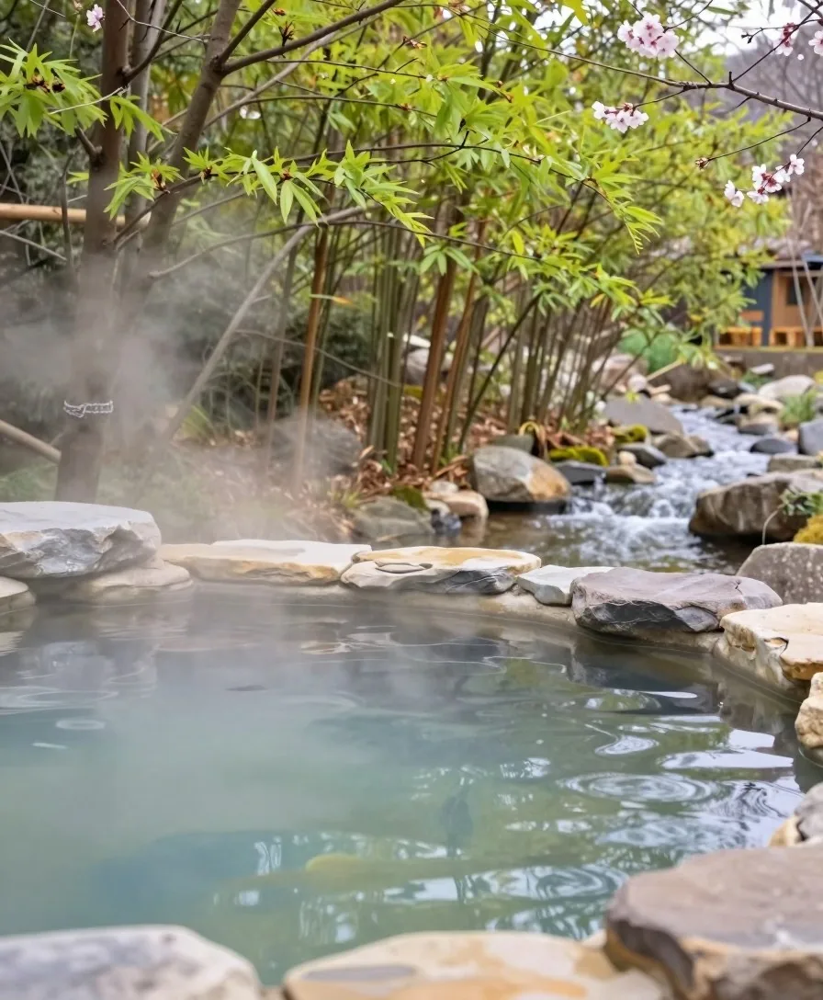

SEASONS
季節が巡るたび、訪れたくなる宿。
同じ宿でも、季節ごとにまったく違う顔になります。周辺をめぐらなくても、宿で過ごす時間そのものが、旅になります。
芽吹く山々と、やわらかな朝の空気
朝の縁側で、湯上がりのお茶を。
雪解けの水が流れ込み、谷の緑が日ごとに濃くなります。朝の空気はやわらかく、湯上がりの縁側が、いちばん心地よい時間です。


SEASONS
同じ宿でも、季節ごとにまったく違う顔になります。周辺をめぐらなくても、宿で過ごす時間そのものが、旅になります。
朝の縁側で、湯上がりのお茶を。
雪解けの水が流れ込み、谷の緑が日ごとに濃くなります。朝の空気はやわらかく、湯上がりの縁側が、いちばん心地よい時間です。
